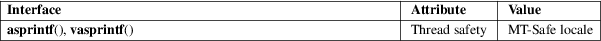

asprintf, vasprintf − print to allocated string
Standard C library (libc, −lc)
#define
_GNU_SOURCE /* See feature_test_macros(7) */
#include <stdio.h>
int
asprintf(char **restrict strp, const char
*restrict fmt, ...);
int vasprintf(char **restrict strp, const char
*restrict fmt,
va_list ap);
The functions asprintf() and vasprintf() are analogs of sprintf(3) and vsprintf(3), except that they allocate a string large enough to hold the output including the terminating null byte ('\0'), and return a pointer to it via the first argument. This pointer should be passed to free(3) to release the allocated storage when it is no longer needed.
When successful, these functions return the number of bytes printed, just like sprintf(3). If memory allocation wasn’t possible, or some other error occurs, these functions will return −1, and the contents of strp are undefined.
For an explanation of the terms used in this section, see attributes(7).

The FreeBSD implementation sets strp to NULL on error.
GNU, BSD.
free(3), malloc(3), printf(3)